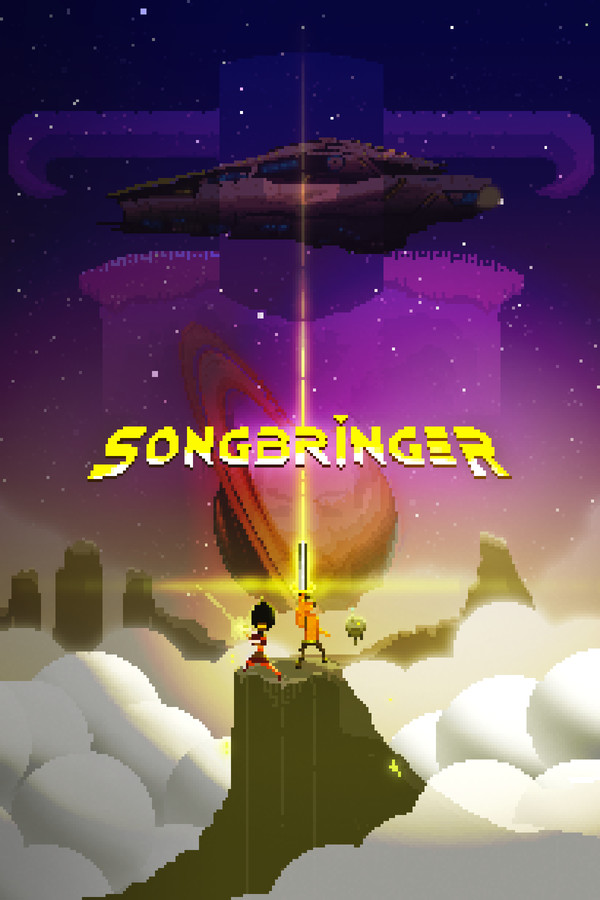

Songbringer
Songbringer
Details
|  | |
| Playtime | Not Played |
| Last Activity | Never |
| Added | 4/16/2022 10:07:50 |
| Modified | 5/3/2022 21:03:06 |
| Completion Status | $Check Out |
| Library | Playnite |
| Source | Wanderer |
| Platform | PC (Windows) |
| Release Date | 9/1/2017 |
| Community Score | 73 |
| Critic Score | 68 |
| User Score | |
| Genre | Adventure RPG |
| Developer | Wizard Fu |
| Publisher | Double Eleven Wizard Fu |
| Feature | Co-Op Full Controller Support Multiplayer Remote Play On TV Shared/Split Screen Shared/Split Screen Co-Op Single Player Stats |
| Links | Community Hub Discussions Guides News Store Page PCGamingWiki Achievements |
| Tag | [EMT] Logo Missing |
Description

Songbringer is a procedurally-generated scifi action RPG with swords, secrets, dungeons, bosses and stuff.
You play the role of protagonist and accidental hero, Roq Epimetheos. With a propensity for partying and making music, he cruises the galaxy with his skybot Jib aboard the ship Songbringer, searching for verdant planets absent the presence of galactic police.
When Roq finds the nanosword hidden in a cave on Ekzera, he unwittingly awakens an ancient evil. The sword is pretty fraggin' sweet though. It... hums.

Jib, the Skybot
Jib began life as a human boy on the skycity planet Yuerder. Growing up, he took an interest in programming artificial intelligence, eventually making a career for himself. On his deathbed, he illegally transferred his consciousness into a skybot, destroying the consciousness link thereby preventing overwrite.
Jib scans the bodies of your fallen foes, sometimes uncovering valuable loot. He can also gain the ability to stun foes. Jib is automatically controlled by AI, or player two can play Jib in local co-op mode.
Lacking the ability to grow one as a human, Jib is obsessed with mustaches.

Procedural
You choose a 6-letter world seed when beginning a quest. This seed is used to procedurally generate the planet, overworld, secrets and dungeons.
Entering the same world seed will always generate the same world, no matter which platform you are playing on. Thus lore and competition can be shared with others.
Play a new seed and surprise yourself with a new world. Or enter a seed you are familiar with for a speed run.

Open / Non-linear
The generated overworld is open and non-linear. Head in any compass direction you like or play dungeons out of order. You aren't even required to pick up the sword.
Of the nine dungeons Roq and Jib can uncover in each world:
- Some are thematic, containing puzzles and items integral to completing the world.
- Some are secret, hidden side quests in which abilities can be gained.
- Some are tough as nails with overwhelmingly difficult foes, mobs and bosses.
Secrets of the Cacti
Everywhere one looks, there is much that is not seen. Concealed treasures abound. By eating cacti, Roq gains psychedelic powers and is able to perceive the secrets that lurk in plain sight.
Some items Roq discovers can be combined to create distinct artifacts. Find a blink orb and a fire cube? Take these to the droidsmith aboard Songbringer to craft a fire orb enabling Roq to teleport forward a few steps while turning into a fireball.
Songbringer features no experience points (no XP). Progress is made by crushing mobs, vanquishing bosses and claiming lost technological devices.
Leaderboard
On completing a quest, several factors are quantified to produce an overall score:
- Time to complete
- Percentage of map uncovered
- Percentage of items obtained
- Game mode: regular vs permadeath
Your score can be saved to a global leaderboard sorted by world seed. This leaderboard cycles through seeds by popularity and freshness. You can manually override to view a particular seed.